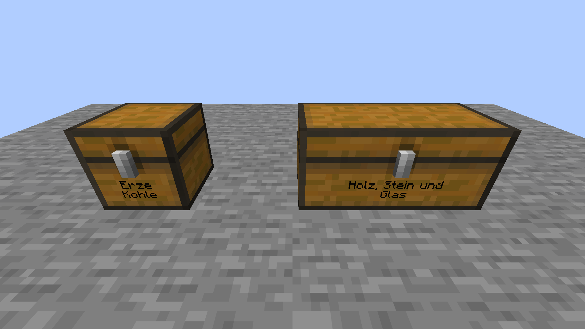
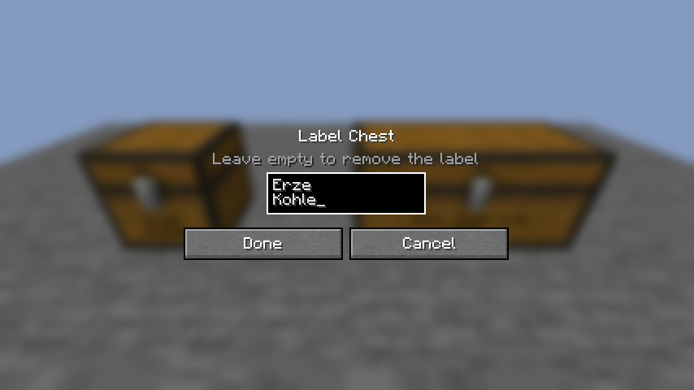

Chest Front Labels
Fabric-Mod für Minecraft 26.3. Truhen lassen sich wie Schilder beschriften, der Text steht direkt auf der Front.

Beschriften
- Beide Hände leer lassen.
- Schleichen (Shift) und die Truhe rechtsklicken.
- Text eingeben wie auf einem Schild: bis zu zwei Zeilen, Enter beginnt die zweite.
- Mit Fertig bestätigen.

Gut zu wissen
- Eine Doppeltruhe hat eine gemeinsame, breitere Beschriftung.
- Lange Texte brechen um und werden kleiner gezeichnet.
- Leeren Text bestätigen entfernt die Beschriftung.
- Gilt für Truhen und Fallentruhen, nicht für Endertruhen.
- Die Beschriftung wird mit der Truhe gespeichert und alle Spieler sehen sie.
Installation
- Fabric Loader ab 0.20 für Minecraft 26.3 installieren.
- Fabric API in den Ordner
modslegen. - Die JAR von Chest Front Labels aus den Releases in denselben Ordner legen.
Auf Servern muss die Mod auf dem Server und bei allen Spielern installiert sein.